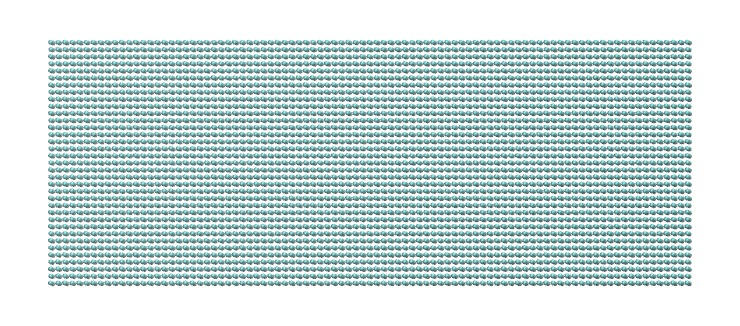
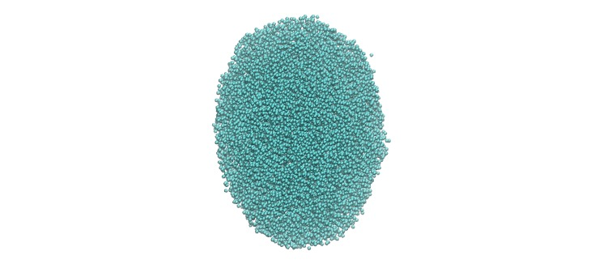
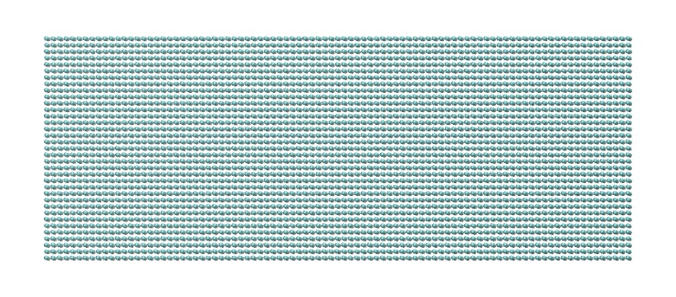
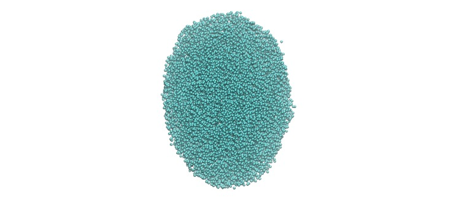
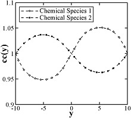

pair_style edpd command¶
pair_style mdpd command¶
pair_style mdpd/rhosum command¶
pair_style tdpd command¶
Syntax¶
pair_style style args
style = edpd or mdpd or mdpd/rhosum or tdpd
args = list of arguments for a particular style
edpd args = cutoff seed cutoff = global cutoff for eDPD interactions (distance units) seed = random # seed (integer) (if <= 0, eDPD will use current time as the seed) mdpd args = T cutoff seed T = temperature (temperature units) cutoff = global cutoff for mDPD interactions (distance units) seed = random # seed (integer) (if <= 0, mDPD will use current time as the seed) mdpd/rhosum args = tdpd args = T cutoff seed T = temperature (temperature units) cutoff = global cutoff for tDPD interactions (distance units) seed = random # seed (integer) (if <= 0, tDPD will use current time as the seed)
Examples¶
pair_style edpd 1.58 9872598
pair_coeff * * 18.75 4.5 0.41 1.58 1.42E-5 2.0 1.58
pair_coeff 1 1 18.75 4.5 0.41 1.58 1.42E-5 2.0 1.58 power 10.54 -3.66 3.44 -4.10
pair_coeff 1 1 18.75 4.5 0.41 1.58 1.42E-5 2.0 1.58 power 10.54 -3.66 3.44 -4.10 kappa -0.44 -3.21 5.04 0.00
pair_style hybrid/overlay mdpd/rhosum mdpd 1.0 1.0 65689
pair_coeff 1 1 mdpd/rhosum 0.75
pair_coeff 1 1 mdpd -40.0 25.0 18.0 1.0 0.75
pair_style tdpd 1.0 1.58 935662
pair_coeff * * 18.75 4.5 0.41 1.58 1.58 1.0 1.0E-5 2.0
pair_coeff 1 1 18.75 4.5 0.41 1.58 1.58 1.0 1.0E-5 2.0 3.0 1.0E-5 2.0
Description¶
The edpd style computes the pairwise interactions and heat fluxes for eDPD particles following the formulations in (Li2014_JCP) and Li2015_CC. The time evolution of an eDPD particle is governed by the conservation of momentum and energy given by
where the three components of \(F_{i}\) including the conservative force \(F_{ij}^C\), dissipative force \(F_{ij}^D\) and random force \(F_{ij}^R\) are expressed as
in which the exponent of the weighting function s can be defined as a temperature-dependent variable. The heat flux between particles accounting for the collisional heat flux \(q^C\), viscous heat flux \(q^V\), and random heat flux \(q^R\) are given by
where the mesoscopic heat friction \(\kappa\) is given by
with \(\upsilon\) being the kinematic viscosity. For more details, see Eq.(15) in (Li2014_JCP).
The following coefficients must be defined in eDPD system for each pair of atom types via the pair_coeff command as in the examples above.
A (force units)
\(\gamma\) (force/velocity units)
power_f (positive real)
cutoff (distance units)
kappa (thermal conductivity units)
power_T (positive real)
cutoff_T (distance units)
optional keyword = power or kappa
The keyword power or kappa is optional. Both “power” and “kappa” require 4 parameters \(c_1, c_2, c_3, c_4\) showing the temperature dependence of the exponent \(s(T) = \mathrm{power}_f ( 1+c_1 (T-1) + c_2 (T-1)^2 + c_3 (T-1)^3 + c_4 (T-1)^4 )\) and of the mesoscopic heat friction \(s_T(T) = \kappa (1 + c_1 (T-1) + c_2 (T-1)^2 + c_3 (T-1)^3 + c_4 (T-1)^4)\). If the keyword power or kappa is not specified, the eDPD system will use constant power_f and \(\kappa\), which is independent to temperature changes.
The mdpd/rhosum style computes the local particle mass density \(\rho\) for mDPD particles by kernel function interpolation.
The following coefficients must be defined for each pair of atom types via the pair_coeff command as in the examples above.
cutoff (distance units)
The mdpd style computes the many-body interactions between mDPD particles following the formulations in (Li2013_POF). The dissipative and random forces are in the form same as the classical DPD, but the conservative force is local density dependent, which are given by
where the first term in \(F_C\) with a negative coefficient \(A < 0\) stands for an attractive force within an interaction range \(r_c\), and the second term with \(B > 0\) is the density-dependent repulsive force within an interaction range \(r_d\).
The following coefficients must be defined for each pair of atom types via the pair_coeff command as in the examples above.
A (force units)
B (force units)
\(\gamma\) (force/velocity units)
cutoff_c (distance units)
cutoff_d (distance units)
The tdpd style computes the pairwise interactions and chemical concentration fluxes for tDPD particles following the formulations in (Li2015_JCP). The time evolution of a tDPD particle is governed by the conservation of momentum and concentration given by
where the three components of \(F_{i}\) including the conservative force \(F_{ij}^C\), dissipative force \(F_{ij}^C\) and random force \(F_{ij}^C\) are expressed as
The concentration flux between two tDPD particles includes the Fickian flux \(Q_{ij}^D\) and random flux \(Q_{ij}^R\), which are given by
where the parameters kappa and epsilon determine the strength of the Fickian and random fluxes. \(m_s\) is the mass of a single solute molecule. In general, \(m_s\) is much smaller than the mass of a tDPD particle m. For more details, see (Li2015_JCP).
The following coefficients must be defined for each pair of atom types via the pair_coeff command as in the examples above.
A (force units)
\(\gamma\) (force/velocity units)
power_f (positive real)
cutoff (distance units)
cutoff_CC (distance units)
\(\kappa_i\) (diffusivity units)
\(\epsilon_i\) (diffusivity units)
power_cc_i (positive real)
The last 3 values must be repeated Nspecies times, so that values for each of the Nspecies chemical species are specified, as indicated by the “I” suffix. In the first pair_coeff example above for pair_style tdpd, Nspecies = 1. In the second example, Nspecies = 2, so 3 additional coeffs are specified (for species 2).
Example scripts¶
There are example scripts for using all these pair styles in examples/USER/meso. The example for an eDPD simulation models heat conduction with source terms analog of periodic Poiseuille flow problem. The setup follows Fig.12 in (Li2014_JCP). The output of the short eDPD simulation (about 2 minutes on a single core) gives a temperature and density profiles as

The example for a mDPD simulation models the oscillations of a liquid droplet started from a liquid film. The mDPD parameters are adopted from (Li2013_POF). The short mDPD run (about 2 minutes on a single core) generates a particle trajectory which can be visualized as follows.
 



The first image is the initial state of the simulation. If you click it a GIF movie should play in your browser. The second image is the final state of the simulation.
The example for a tDPD simulation computes the effective diffusion coefficient of a tDPD system using a method analogous to the periodic Poiseuille flow. The tDPD system is specified with two chemical species, and the setup follows Fig.1 in (Li2015_JCP). The output of the short tDPD simulation (about one and a half minutes on a single core) gives the concentration profiles of the two chemical species as
Mixing, shift, table, tail correction, restart, rRESPA info¶
The styles edpd, mdpd, mdpd/rhosum and tdpd do not support mixing. Thus, coefficients for all I,J pairs must be specified explicitly.
The styles edpd, mdpd, mdpd/rhosum and tdpd do not support the pair_modify shift, table, and tail options.
The styles edpd, mdpd, mdpd/rhosum and tdpd do not write information to binary restart files. Thus, you need to re-specify the pair_style and pair_coeff commands in an input script that reads a restart file.
Restrictions¶
The pair styles edpd, mdpd, mdpd/rhosum and tdpd are part of the USER-MESODPD package. It is only enabled if LAMMPS was built with that package. See the Build package doc page for more info.
Default¶
none
(Li2014_JCP) Li, Tang, Lei, Caswell, Karniadakis, J Comput Phys, 265: 113-127 (2014). DOI: 10.1016/j.jcp.2014.02.003.
(Li2015_CC) Li, Tang, Li, Karniadakis, Chem Commun, 51: 11038-11040 (2015). DOI: 10.1039/C5CC01684C.
(Li2013_POF) Li, Hu, Wang, Ma, Zhou, Phys Fluids, 25: 072103 (2013). DOI: 10.1063/1.4812366.
(Li2015_JCP) Li, Yazdani, Tartakovsky, Karniadakis, J Chem Phys, 143: 014101 (2015). DOI: 10.1063/1.4923254.